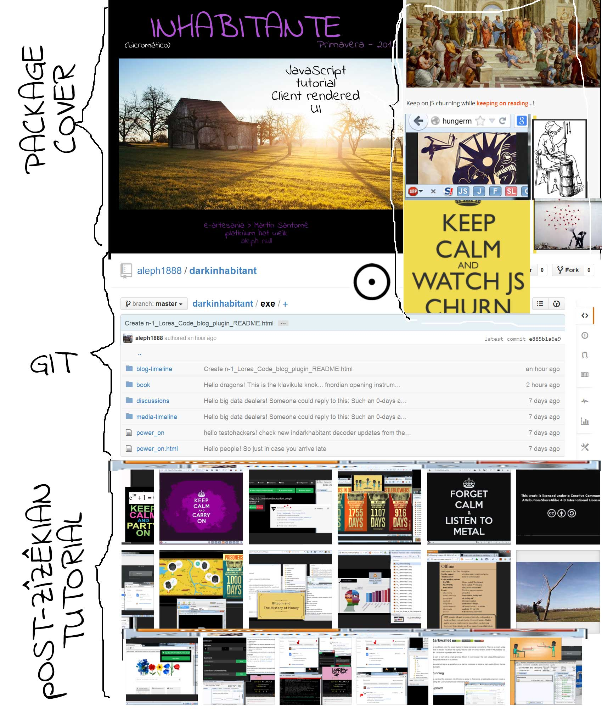

Darkinhabitant, a pervert guide to TIC
Habitante policromático, guía lumpen a las TIC
View the Project on GitHub aleph1888/darkinhabitant

Preámbulo:
Lorea reloaded, Célula Coders [# 1, by the date; de momento célula de uno], «no nos mires ¡únete! don't just use it, join the party!».
¡Se buscan coders para la operación Lorea Reloaded Spring-Summer-Autumn 2015! Únete en el grupo de Code si solo vas a opinar y criticar, y pasa al hackathons si además vas ¡a pulir piedra!
tags: weiks, oikonomia, oikos, Elgg2.0, Client-rendered UI's
CHAPTER ZERO: How do we survive while gardenering / Cómo sobrevivimos mientras codeamos en el jardín. CHAPTER ONE: Lorea seed / La semilla de la flor. CHAPTER TWO: The goal / La meta. CHAPTER THREE: Heavy metal code! / Vemos qué se va a construir. CHAPTER FOUR: Technical premises and other mechanical axiomatic considerations / Algunas cosas que habría que tener en cuenta para no pringarla nada más empezar. CHAPTER FIVE: Magnetic'em all / ¡Vale, poniéndonos el mono de faena! CHAPTER SIX: Conclusions and derivations: SCRUMer way of life / Recapitulación y calendario. CHAPTER SEVEN: References & notes / Consejas y pautas. CHAPTER EIGHT: The project: darkinhabitant, a lorea petal falls down / El projecto: habitante policromático: caen pétalos desde Lorea.

CHAPTER ZERO:
How do we survive while gardenering / Cómo sobrevivimos mientras codeamos en el jardín
[English]--------------------------
Hi,
This is to take on consideration how do we survive while gardering in Loreas's garden.
The idea of this discussion is to summerize our options and to set starting points to commit them.
[Spanish]----------------------
Buenas,
Mientras que alguna formación política de nueva generación estructurada en círculos de acción ciudadana no acabe de asaltar el cielo rompiendo con el bipartidismo del régimen del 78 que ha vendido nuestra sociedad a las élites financieras mundiales e instaure por decreto ley una renta básica popular que nos permita dedicarnos a nuestras labores sin preocuparnos del hambre, el techo y los vicios (sin vicios no hay virtudes...) propios y de nuestros familiares, alguien ha cuestionado la viabilidad del "Lorea Reloaded Primavera-verano-otoño 2015 hackathon semipermanente,", que es un tema no por sempiterno menos vigente y necesario de tratar, cuestionándolo en términos de liquidez económica.
Abro este hilo, que luego podría traspasarse a la wiki o a otro lado más pertinente, para ir recopilando propuestas de generación de ingresos y de reparto entre los jardineros que tengan a bien pasarse durante estas tres estaciones por los jardines de Lorea.
[English]--------------------
Proposition #1: (Criptographic) crowdfunding, microcredits & microtasks.
The proposition here is to use some bithub based platform to underneath the gardenering tasks.
Installation summerized process:
a) Install Java:
- https://launchpad.net/ubuntu/+source/openjdk-7
b) Install Apache Maven:
- http://maven.apache.org/guides/getting-started/maven-in-five-minutes.html
c) Get Github and Coinbase accounts:
d) Install Bithub:
- https://github.com/WhisperSystems/BitHub/blob/master/README.md
[Spanish]
Propuesta #1: Microreparto de microfinanciación colectiva (en moneda criptográfica)
Esta propuesta se vertebra en los conceptos de los microcréditos y la financiación multitudinaria sobre los ejes de la propiedad colectiva. En síntesis, la propuesta propone: habilitar un entorno (o repositorio) de programación distribuida (tipo git) capaz de recibir las microdonaciones y capaz de asignarlas a microtareas que una vez realizadas y commiteadas liberen la retribución correspondiente al coder que efectúa el pull request.
En este paradigma, por encima de monedas fiduciarias y monedas sociales, las monedas criptográficas ofrecen desde ya entornos habilitadores de tal modelo. Es un ejemplo de esto bithub: https://whispersystems.org/blog/bithub.
Ni que decir tiene que la experiencia podría derivar idealmente, mediante y durante ulteriores hackathones, en el desarrollo de herramientas API para incorporar al entorno monedas sociales como iCES (sistema que a día de hoy ya implementa OpenTransact y OAuth2); o, en la misma línea, integrar la plataforma dentro de la red Fair.coop usand faircoins en lugar de bitcoins para lo cual sería muy útil, a priori, incluir el proyecto de esta plataforma de microremuneración distribuida en la incubadora de la cooperativa justa.
CHAPTER ONE:
Lorea seed / La semilla de la flor
[English]--------------------------
Hi, It'd be nice to use this discussion to manage the updating of the tutorial to install local seed, located on this wiki's group.
https://n-1.cc/dokuwiki/17605/doku.php?id=tutorial_to_install_local_seed
Every thing needed to be updated should finish on new version tutorial:
https://n-1.cc/dokuwiki/17605/doku.php?id=tutorial_to_install_1.8_local_seed
[Spanish]------------------------
Asunto: Manual de instrucciones instalación local para desarrollo.
Quisiera valorar conjuntamente si el manual de instalación (que parece obsoleto) de una semilla local para desarrollo ubicado en:
https://n-1.cc/dokuwiki/17605/doku.php?id=tutorial_to_install_local_seed
... es buen cabo para arrancar o no. Claramente, en su cabecera se indica la url para la versión 1.8, que está vacío:
https://n-1.cc/dokuwiki/17605/doku.php?id=tutorial_to_install_1.8_local_seed
... y, quizás, aprovechando, se podría completar, ¿alguien conoce los matices que han variado en cuanto al proceso de instalación respecto del manual anterior?
CHAPTER TWO:
The goal / La meta
[English]----------------
Elgg 2.0 Plugin for inhabitant backups
Brainstorming
This is to list proposed perspectives to achieve the backup per inhabitant plugin goal.
Summerizing current possibilities:
- APP like by caching content offline
- REST-API like client/webservices
- Pseudo-admin back up
- Generating compressed file "on the fly"
1) APP like by caching content offline
There is some kind of "A secure, offline-capable, mobile-first web client for Elgg built with AngularJS." on https://github.com/ewinslow/ng-elgg where an APP model gets in the scene, on Elgg Comunity forums, we can read main points:
- View logic is rendered on the client, therefore not burdening server CPU or memory.
- The app's assets will be cached offline, therefore not burdening the server with requests for the same assets on repeat visits.
- The app's assets are cached offline, so users startup experience in many cases is bounded by JS parse and execution time, not network RTT and server response time. If you don't have the data cached offline yet, then you do still need to take the network hit, unfortunately.
- The app's assets are static, so no need for PHP to run when they're first requested.
- It will be trivially easy to make sure that all assets are minified and compressed, including optimizing images and minifying HTML templates.
- Everything is executed async and as-needed with RequireJS/AMD to minimize JS parse/execution time, instead of loading the WHOLE app in 1 giant JS file up front, which would kill startup time on mobile because Elgg is HUUUGE. Only the minimum JS for the current page is run, then as you load more pages more JS is loaded to work in those pages. It's really quite cool if I do say so myself.
- Even entities and lists of entities will be cached offline so users will be able to get stale data in a few milliseconds (effectively instantly). That data is then updated in the background from the server.
2) REST-API like client/webservices
The idea here is to use some JS/HTML/CSS user interface to display data that is pulled from Elgg webservices by using user authentication and api key. There is an already developed plugin based on this: https://www.marcus-povey.co.uk/2009/08/25/using-elggs-rest-like-api/ , that could be used as a model. In developer's own word, the process (for newbies) should go as:
- expose a function as a web services method and get it working without any authentication from a web browser
- start calling the method from a client application on your computer (PHP cli, Python, Java, etc). You can take a look at the client libraries put together for Flickr or Twitter for an idea of how to build a simple client
- add authentication - first API and then user
- move to the client.
- build out your web services API and the client application
3) Pseudo-admin back up
Another approach, mainly for advanced inhabitants, could be the customization of a generic admin backup plugin like https://community.elgg.org/plugins/1329896/releases/1.0 to perform a selective and dedicated backup that user could recreate on another installation.
4) Generating compressed file "on the fly"
By the way, it seems a lot easier, some kind of only one-time-use approach combining 1) and 2) just looping on inhabitant profile and generating some XML file that can be downloaded to be consumed offline. Here we are thinking on Twitter backup request example.
Backup process should create a unique compressed file consisting in static HTML5 (XML) plus content folder (images, etc.) and the plugin should take care about storing quote on disk and downloading dead line.
CHAPTER THREE:
Heavy metal code! / Vemos qué se va a construir
[English]---------
Some little son of Eris, and so on nevertheless while keep on surfing on the edge of his stupidity, talks about how do we survive while gardenering and while seeding... this is a thread to go through.
The fucking little bastard of Eris could keep his mouth closed, however, nertheless and so on, he carries a hand repeatly to his nouse... while trying to give a Lorea-lorea SCRUMer Elgg2.0 plugin and a darkinhabitant APP a suitable definition. Sorry, I tried to translate but it seems to me too naive and naïf.
At last, the pussy testohacker points to some trashed project he has done about a Mangopay gateway to Wordpress through EasyDigitalDownloads kit and talks about lisergic-quemical paradigsm fathered by Albert Hoffman.
Well... I did my best in translation! Some one could help.
Party on?
Spring 2015 Week#01
[Spanish]---------
Buenas,
... yo era un pequeño bastardo hijo de Eris, un tristón non serviam, maldita marioneta obrera al servicio de instituciones y caciques: yo era un ilota cuando no un esclavo de tripalliare.
... entonces, decíamos, venía llorado de antes... recapitulo para que consolide el hilo discursivo....
... siguiendo el hilo de la Lorea pri-ver-oto 2015 semipermanent hackathon, estaba pensando en cómo calculan la hipotenusa un matemático y un ingeniero [1], y, entonces, pensando en el tema de "la plataforma microremuneradora" en ese hilo sobre el plugin de inhabitatns backups Elgg2.0, he visto esto de alguien que no conozco y no puedo opinar si no me los instalo lo pruebo, como plataforma de reparto por méritos spliddit.
Ahora voy a verlo, pero, cuando se habló de un servicio en Java como Bithub que conecta una cuenta de Github con una de Coinbase, no sé si se especificó, ahora lo haría, que el servicio debe mediar la remuneración de unas tareas que se hayan realizado en un proceso productivo regulado por SCRUM. Mejor en Redmine.
De ahí el plugin Elgg2.0 Lorea-lorea_SCRUMer. Algo parecido a ese spliddit, ahora lo miraremos, molaría que alguien lo criticara, usarlo como carcasa para incorporarle los Lorea-lorea_SCRUMer plugin, que sean estos:
Un plugin para Elgg2.0 capaz de vincular a un darkinhabitant a la pila de springs y al bloque de evaluaciones de un equipo de desarrollo que está SCRUMeando algún proyecto en un Redmine o similares.
La idea de que el darkinhabitant esté conectado a Lorea-Elgg2.0 y, rizomáticamente, y este rizomatismo es de vital importancia porque siembra estrellas, que esté vinculado con el Lorea-lorea_SCRUMer plugin a su calendario de gantt, es que, a la postre, sus carteras, tanto de moneda fiduciaria como de crédito en sistemas de intercambio o criptográficos, reflejen el resultado. Todo bien recogidito en un anillo de llaves en un llavero USB con una pegatina que muestre un puño, ahogándose el dueño del puño, zizekiano último frame de la pelicula The pervert guide to Ideology.
Este tutorial y este proyecto es pos-titanis. Nada de arquitecturas basadas en clase para largas travesías transoceánicas entre potencias hegemónicas dominantes. Quiere decirse que... bueno, al grano.
Yo personalmente, no veo esto como un "capítulo aparte" tipo el que dio CyanogenMod cuando se quitó el Mod. Pero, sí, de algún modo, en este tutorial poszizekiano se anda buscando ROM's y caché. Ahí se apunta a una presencia concreta del proyecto. Así que la estela de Carbon para las backups y el Clockwork (https://github.com/koush/Superuser) para el darkinhabitant habrá que seguirla. Aunque solamente sea por referencias macrodimensionales.
Yo creo que, sin mucho lío:
un Darkinhabitant es un avatar federado vía openID o vía oAuth a una red que alberga una base de datos con memoria colectiva. Diría que un usuario de Lorea-Elgg 2.0, con una Darkwalllet, una fairwallet, y una cuenta en una comunidad de intercambio es un darkinhabitant.
No creo que yo aquí esté diciendo tampoco nada que no se lea en el ambiente. Me limito a to put in together, lo que se ve que está haciendo la peña.
Bueno, pues, nada, caña por un tubo!
Estoy por ver si me gasto los 0.67 btc que me gané haciéndole una customization a alguien a través de un gitlab privado sobre la pasarela EasyDigitalDownloads Mangopay gateway comprándome unos ácidos en Silk Road 2.0, o si me conformo leyéndome el librito eleesedero que aquí el caballero ha biografiado de las fuentes y publicita en el foro de la orden [2] e invierto esto en el primer Sprint de este proyecto.
Now playing: Gojira, l'enfant sauvage!
What, bailas?
Primavera 2015, semana #01
Push the power on button!!!!!

¡El rey va desnudo!
REFERENCIAS:
[1] http://cifrasyteclas.com/2013/03/22/como-calculan-la-hipotenusa-un-matematico-y-un-ingeniero/
[2] http://www.sanchezdrago.com/foro/viewtopic.php?p=44392#44392
CHAPTER FOUR:
Technical premises and other mechanical axiomatic considerations / Algunas cosas que habría que tener en cuenta para no pringarla nada más empezar
[English]----------------
By approaching what seems to be the easiest way to get the plugin: 4) Generating compressed file "on the fly", here it is some very generic overview of the flow and element steps.
We consider a "Backup Class" which would take care of coursing backup orders; and a "Backup Cron" which would manage the orders:

Ok, then, pickup the point of view, up to IRC server.
Rollero and Aleph find each other on 17/03/2015 irc#lorea meeting.
Rollero says that this plugin is not worth for current Lorea version. But he says that bithub sounds good. He also makes Aleph to notice that a Group belongs to an Owner rather to an inhabitant, and he dares to coders the possibility to manage that.
Aleph tells Rollero that there are some inhabitant needing this plugin and that this could be a reason to develop it. He also explains that if there were some quorum in the lorea-reloaded-spring-summer-autumn-2015 semipermanent hackathon the task list could grow and be priorized.
[Spanish]----------
(20:04:00) rollero: q tal aleph?
(20:04:46) aleph: Very good, pero un poco mojao que ha caído una buena esta tarde!!!! y vos?
(20:08:38) rollero: ah yo bien por aqui
(20:08:45) rollero: estaba leyendo lo de bithub
(20:08:56) rollero: mola, no sabia, tengo q leer mas
(20:09:07) rollero: yo abri un hilo hace mil sobre eso
(20:09:56) rollero: bueno, me imagino tambien una manera mas simple y cutre de atacar el asunto
(20:10:17) aleph: Molaría recopilar la info en el hilo para ver qué opciones...
(20:10:32) aleph: mañana, creo, dispondré de un server para intalar una demo... para cacharrear...
(20:10:51) rollero: con un formulario y checkboxes ya podria valer.. pero mextraña q no haber oido lo de bithub en faicoop o coopfunding
(20:11:13) rollero: vaya q bien
(20:11:48) rollero: voy a ver q dicen en el grupo de coopfunding
(20:16:19) rollero: ah, el tema de bithub crees q es mejor solo para software libre activista?
(20:17:32) aleph: Bueno, en verdad, siempre, pensando en máximos-utópicos, lo genial sería desarrollar nuestro propio gestor de micropagos... Bithub solamente es un servicio que conecta github con coinbase...
(20:17:53) aleph: molaría poder conectar repositorios de gitorious o redmine con carteras darkwallet... and so on...
(20:18:42) aleph: Y del plugin para backups de usuarios qué opinas? algunan idea de cómo abordarlo? https://n-1.cc/discussion/view/2095202/lorea-reloaded-spring-summer-autumn-2015-plugin-inhabitant-backups
(20:20:27) rollero: estaba pensando en eso del dw si, y creo q lo del funding iba para la 1.0 si. en un par de dias o tres digo algo por alli por el foro
(20:20:46) rollero: lo de la data
(20:21:01) rollero: claro q mola, pero no lo veo para desarrollar en elgg
(20:29:49) aleph: como te oiga Efecto99 decir que el plugin este no hace falta te ata los testículos con hilo de púas y te los aprieta hasta que te efundan los líquidos primordiales... ;.D
(20:29:54) aleph: :-D
(20:30:26) rollero: :P
(20:31:00) rollero: para mi la prioridad de hacerlo en elgg es bajisima..
(20:31:04) rollero: para mi eh
(20:31:32) aleph: qué significa la abreviación que has puesto arriba: dw?
(20:31:50) rollero: es que encima el content added to the group belong to the group (owner)
(20:31:54) rollero: darkwallet
(20:32:25) aleph: :P
(20:32:26) rollero: bajarse lo publicado desde un user en su profile igual es facil, pero lo otro debe ser chungo de testiculos
(20:33:29) rollero: ei podriamos empezar por tener una direccion de bitcoin para lorea y otra para n-1, q tal?
(20:33:44) aleph: Bueno, si sale quorum para ese "Lorea Reloaded Spring-Summer-Autumn 2015 semipermanent hackathon" que propongo podemos listar tareas y poner esta en el grado de prioridad que el corresponda...
(20:33:45) rollero: bitcoin y etcrypto mas
(20:34:01) aleph: Creo que ya la tienen...
(20:34:21) rollero: ah voy a checkear
(20:34:27) aleph: me parece que figuran en la portada del grupo:
(20:35:04) aleph: https://n-1.cc/pg/groups/11605/sustainability/
(20:35:18) rollero: 1PsJRjeThvsJuRBxf3hnzQjH16MPA8cMmU
(20:35:59) rollero: hay q darle mas visibilidad
(20:36:13) rollero: tanto para eldonante como para el participante
(20:36:23) rollero: sabeis algo de la web lorea.org?
(20:37:33) rollero: podemos hacer una cuenta cryptocoin para n-1 pim-pam
(20:37:59) rollero: y lo ponemos en la web n-1.cc
(20:38:02) aleph: de la web parece que hay algún problema de certificados... https://n-1.cc/discussion/view/2080888/loreaorg-re-visited
(20:39:35) aleph: De esos que dice de la moneda, en el grupo "sustainability", Binge propone crear una moneda para n-1: https://n-1.cc/discussion/view/2087615/sostenibilidad-de-n-1-2015
(20:40:37) rollero: que cabeza pondria el contenido solo para usuarios logueados por defecto?
(20:40:51) rollero: no me puedo loguear ahora para verlo.. :)
(20:41:11) aleph: Vaya... eso sí que es fácil de cambiar en el panel de admin...
(20:41:15) rollero: en cuanto pueda lo cambio a publico por defecto en n-1
(20:41:27) aleph: ¿tú eres admin?
(20:41:35) rollero: pero tengo q pillar a un admin desprevenido ;)
(20:41:42) aleph: :-D
(20:41:49) rollero: yo no, ni operator
(20:42:04) rollero: mi unico privilegio es ser creador de tareas en el grupo n-1
[English]---------
As Blinge quote about current task list priorities, Aleph & Blinge agree with to pull the plugin in the array over the calendar.
Also, about first perspective above: 1) APP like by caching content offline, ... here there is an ataching: «a nine-frames gif about ng-browser and the evolution of serverMVC to APP paradigm» just to hold in the wall a two minutes speech introduction. Gif's frame duration is intended to be remarked a time-extension speech pulse while dealing with the microphone.

[Spanish]
Veréis. Creo que hay que renovar las cuentas de paypal y de bitcoin del capítulo de donaciones de lorea. Ahora mismo está un poco desordenado el asunto.
Cuando hayamos hecho eso estoy de acuerdo en volver a darle más visibilidad.
Vale. Ya se abordará en su momento, entonces. He estado mirando sobre la primera opción: 1) APP like by caching content offline.
CHAPTER FIVE:
Magnetic'em all / Vale, poniéndonos el mono de faena!
[English]----------------
Hi,
I was wondering if could be nice to spread some flyers in the net just to make gardeners notice that they can join the semipermanent spring-summer-autumn 2015 Lorea hackaton; this album is to manage some flyers and advertising material.
[Spanish]----------------
Buenas,
No sé si sería una buena idea salir en grupitos a diseminar la idea del hackaton semipermantente primavera-verano-otoño 2015 y colgar por la red carteles en busca de coders voluntariosos que quieran adherirse. Quizás podríamos organizar algún seminario virtual para mostrar cómo es el proceso de instalación de una semilla enlanzando con la importancia de no usar herramientas del amo para desmontarle la casa.
Recoger en este álbum bocetillos de carteles o materiales para buscar jardineros que se pregunten qué pueden hacer por Lorea una vez descubran qué puede hacer ella por ellos.
A kind of starting-up overview
[English]-------------
This is a flyer draft just to advertise the semipermanent hackaton.
[Spanish]---------------
Cartel publicitario: se buscan jardineros.

[Lorea Reloaded Spring-Summer-Autumn 2015]
Plugin "inhabitant backups"
Elgg20,
plugin, inhabitant backup
[English]--------------
See if it is gona be rocked this discussión... as the crows flies... whatever bats...

Here some spam: https://www.youtube.com/watch?v=Yh0X-8iMjTk
Here some recursive linking joke: https://github.com/aleph1888/darkinhabitant/issues/1, but as far as the thread has been moved, it has been desactivated.
[Spanish]-------------
A ver si los cuervos pasan un vuelo rasante con los murciélagos y se discute la piedra esa del hilo:
Esto era un chiste recursivo naive naîf: https://github.com/aleph1888/darkinhabitant/issues/1, pero habiéndose movido el hilo, se ha desactivado.
Now watching: Zìzêk's The pervert's guide to ideology film...
CHAPTER SIX:
Conclusions and derivations: SCRUMer way of life / Recapitulación y calendario.
[English]------------------
|
1 |

AppCaching, in client rendered UI's, is good! HTML5 can manage offline scenarios... |
2 |

It would be good to start a list: what do I need to learn? |
|
3 |

Then, it should be nice to become self-explained... |
4 |

... become self-explained so we are able to avoid off-the-record-voices. And so on... |
|
6 |

A libido-sintetic poszizekian tutorial! |
7 |

Ok. Clear enough: no more of the record voice. |
|
8 |
 |
9 |
 |
|
10 |
 |
11 |
 |
|
12 |
 |
13 |
 |
[Spanish]--------------------
|
1 |

Quizás unas coplas fueran mejor alimento para el viento cuando uno tienta su ponderación en la correlación de fuerzas colectiva... |
2 |

... tantas cosas para hacer y tantos casos por vivir... ¿por qué hacer un tutorial post-zizekiano más? |
|
3 |

Al final, esa sensación de progreso en el contador del identificador de la versión... ¡obras son amores! |
4 |

... habla por un tiempo. Y permite, entonces, guardar silencio. |
[English]-----------------
Concerning above brainstormed option:
1) APP like by caching content offline
... and on the context of: the hackathon called "Lorea Reloaded spring-summer-autumn 2015"... Some rocking girl gives advice to Aleph by saying:
«... a naif coder would see the magic on his hands while trying to approach "inhabitant backup Elgg2dot0 plugin" in a way as you request; the naive coder can think that this plugin is posible by such fucking great controller unsystem people have built; take a look on repo:
https://github.com/darkwallet/darkwallet/blob/develop/src/js/frontend/controllers/backups.js »
"Tell me, what?!!!" -- this is shouted by Aleph-- "This is crazy!!!! Ain't it!"
Can you imagine an APP where this frontend could use this controller... let's say:
https://github.com/lorea/lorea_backup_holder/blob/develop/src/js/frontend/controllers/backups.js ?
[Spanish]---------------------
En el contexto del hackathon semipermanente «Lorea Reloaded primavera-verano-invierno 2015» y del plugin para Elgg2.0 "copias de seguridad para habitantes", un coder perdido en la inmensidad de la impotencia podría escuchar la voz de conseja que una rocking twitt star le da en rebote de su petición, apuntándole a encontrar la panacea en semejante controlador de backups dentro del frontend js de la darkwallet (que, por cierto, van por la 0.8.0):
https://github.com/darkwallet/darkwallet/blob/develop/src/js/frontend/controllers/backups.js
... y, viéndolo, junto con la clase de entrada a la API js --la rocking twitt star le señala--:
https://github.com/darkwallet/darkwallet/blob/develop/src/js/darkwallet.js
"¡Sí se puede, sí se puede!"--exclama Aleph. Cree que puede crear ese plugin...-- "¡Sí se puede!"
(¡¡¡Someone could help this fucking naive, naif coder. Little fnordian son of Eris!!!)
¿Alguien más se imagina un:
https://github.com/lorea/lorea_backup_holder/blob/develop/src/js/lorea_bup_hold.js
?
CHAPTER SEVEN:
References & notes / Consejas y pautas.
[English]---------------
Aleph brings here some mail reply to an specific demand about caching content in client-rendered and appcachebased auth-as-a-service browsers managing dependencies and packages and running tasks.
The guy that is emailed by Aleph, answers by saying that it good to be nice window to use: 2012, de Archibald[1]: Application cache is a douchebag, article.
He also makes some naif joke with current politiks star in Spain's panorama.
[Spanish]------------------
Uno de los juegos más gustosos que tiene Pablo Iglesias en sus tertulias, en un claro alarde de juego con el poder, ya sito en la tertulia en el papel de moderador omnisciente, es el de echarle el cabo a los tertulianos diciéndoles: «Si yo fuera el presidente de la nación y vosotros mis asesores en [tal o cual materia que se está debatiendo], en "regla del minuto", en sesenta segundos: ¿qué me aconsejaríais?»
Pues bien, Aleph, yo aquí, siendo tú el moderador que aguarda mi punto de vista, mi visión-lógica del asunto, si tuviera que asesorarte en un minuto sobre cual es el estado de la cuestión APP en términos generales, tiraría de artículo de 2012, de Archibald[1]: Application cache is a douchebag.
Por ahí que se puedan abordar otros temas a partir de esa ventana.
Básicamente explica «el terreno sobre el que las APPs se asientan, arrojándose desde los servidores de html». Da un poco de contexto técnico, tres años atrás, de un proceso que ahora, en tu demanda, se hace vigente: «la necesidad de dotar a los dispositivos móviles de potencia de almacenamiento y autonomía. La explicación tecnológica de este proceso de emancipación de las app como móneras soberanas que se interconectan en ecosistema punto a punto» se hila en una serie de tecnologías y de tipologías de códigos que participan en el proceso. Sobre todo cuando ese, digamos descenso desde el platónico mundo de servidores LAMP, dota de sustancia a un fragmetario cuerpo de particulas flotando entre la WEB y la DEEP WEB.
Si te veo en persona te lo comento en unos minutos. Vamos mirando. Corto y cambio. ¿Sigues con el blog de los mosqueteros y del Dartañan?
[1] http://alistapart.com/article/application-cache-is-a-douchebag
CHAPTER EIGHT:
The project: darkinhabitant, a lorea petal falls down / El projecto: habitante policromático: caen pétalos desde Lorea.
[Spanglish]-------------
Lorea semi-permanent 2015-Spring-Summer-Autumn hackathon:
Spring: #week 01
What we have already done in this sprint?
aleph publicó una entrada en el blog Tutorial postzîzêkiano: DarkInhabitant, a JavaScript UI en el grupo JavaScript hace una hora
Abordaremos en diez o quince sesiones la construcción de una API Javascript que controle el skeleto de un habitante-oscuro.
Spring: #week 02
Tutorial: lesson 001: becoming a Lorea-dev / Lección 001: Bifurcarse en Lorea-dev
Tutorial postzîzêkiano: DarkInhabitant, a JavaScript UI en el grupo JavaScript:
Abordaremos en diez o quince sesiones la construcción de una API Javascript que controle el skeleto de un habitante-oscuro.
Hello. Hola.
Just wondering if you also would like to join this post-zîzêkian TIC tutorial. ¿En plan 0-days, me preguntaba cómo podría convertirme en un Lorea-Dev?
The idea of becoming a Lorea Dev, while pulling on the tutorial drived me to:
¿Qué diantre podría ser lorea/lorea-dev? Había que averiguarlo.
Of course this repo it is not a paradigm of actuality and breaking news, (you can try, try and try as in Jimmy Cliff's song, because you can get it if you really want: some kind of pure vanguard darkinhabitant [1] just in case you feel disgusting with oldsheet repo above). Si te da grimilla que te ponga un enlace a un repositorio de hace cinco años, puedes echarle un vistazo a darkinhabitant [1] que es más novedoso y molón.
Just in case, from 8 days ago, as starting this semipermanent-hackathon for Lorea's 2015 spring-summer-autumn, wether you came expecting not to get into "the zone" or wether you are expecting for that, here we are: ¡no sigan este tutorial más allá de esta línea quienes nos sepan nadar o lleven flotador o manguitos!
What's Lorea-dev? Vamos a ver qué es lorea-dev. Y, what is more, vamos a ver qué podemos hacer nosotros por lorea-dev. Did you already fork it?

Referencias / links:
[1] https://github.com/aleph1888/darkinhabitant/commit/788254433d5daba3ad5a2d050690eeb00bb786ad
[English]------------
Hello writers and librarians!!!
I want you: https://github.com/aleph1888/darkinhabitant/commit/0e6920c1d1f1d68ee8939f7d57a0635a5aa8fd4e
[Spanish]-------------
Hola, que propongo que el hackathon semipermanente LOREA primavera-verano-otoño 2015, pasando del subgrupo hackathons, por su condición de semipermanente, que la propuesta es de instalarnos en la wiki del grupo CODE. Aquí pongo enlace a la petición.
https://github.com/aleph1888/darkinhabitant/commit/0e6920c1d1f1d68ee8939f7d57a0635a5aa8fd4e
[English]---------------
Fanzine: https://eartesania.files.wordpress.com/2015/03/keep_calm_party_on_2dot01.png
{kind=link}
APPDemo: https://github.com/aleph1888/darkinhabitant/blob/master/manifest.json
Wouldn't be nice to make "darkinhabitant based "backup parties" while playing on some "keysinging party" by getting data on phone chat recording room?
Check proto-plugin for Asterisk-PLN-Lorea's SIP voice platform [1]:
[1] https://github.com/lorea/rtcheckcalls